|
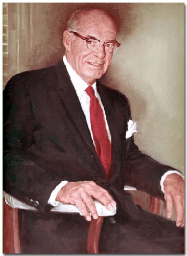
Alexander
Dawson Henderson Jr. was a man of great compassion. Throughout his lifetime,
he demonstrated a constant concern for the welfare of young children.
He worked on projects in education, medicine, sports, business, and
politics. |
||
|
Important
Facts
|
||
| February 16, 1895 | Alexander D. Henderson was born in Brooklyn, New York, the son of Alexander Dawson Henderson Sr. and Ella Margaret Brown. | 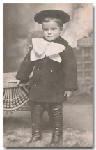 Alexander Henderson Jr. |
| June 14, 1900 | The 1900 U.S. Census lists the Henderson family living on 174 Pulaski Street in Brooklyn, New York: Alexander Sr. (36), Ella B. (35), Alexander Jr. (5), and servant Mary Kiley (23). | |
| 1905 | The family moved to Suffern, New York. He spent most of his early life in Suffern. | |
| 1909 | His Grandmother died at which time his father, Alexander Henderson Sr. inherited his share of his father's estate ($25,000). | |
| 1909 | His father built a Georgian type house on the hill near the Nyack Turnpike in New York. | |
A postcard was made of their Suffern house looking at the residence from the bottom of the driveway. The printing at the top of the potcard reads: "Residence of Mr. A. D. Henderson, Suffern, N.Y." Source: Suffern Free Library, Suffern, New York; postcard; col.; 3 x 5 in. (7.7 x 12.7 cm.). |
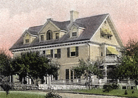 A. D. Henderson HouseSuffern, New York |
|
| April 19, 1910 | The 1910 U.S. Census lists the Henderson family living in Brooklyn, New York: Alexander Sr. (45), Ella B. (42) Alexander Jr. (15), and Girard B. (5). | A. D. Henderson Jr. |
| 1914 | When Alex was 19, the family took a two-month vacation-business trip to buy "essential oils from the french." The family visited the oil factories that made the perfume and see beautiful fields of flowers in France. Source: Jerry's autobiography, So Long, It's been good to Know You, pg. 6. | |
| 1912-1915 | Alexander attended the New York Military Academy, an engineering preparatory school at Cornwall, which is on the west shore of the Hudson River, four miles north of West Point, and fifty-two miles from New York City. A.D. Henderson was listed as Captain on the Basketball team. He was also listed as Lieutenant of Company B from Suffern, N.Y. Source: New York Military Academy Catalogue 1914-1915 |
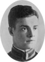 Cadet Henderson at academy. |
| 1915 | The 1915 "Shrapnel" Year Book included the graduating class of the New York Military Academy. | |
| 1916 | Alexander attended Dartmouth College but quit midyear to join the U. S. Army during World War I. | |
| 1916 | Mr. Henderson met Mary Barnes Anthony at a costume party given by Mrs. Elmer Snow. Source: Mary's Family Connections, pg. 93. | 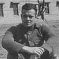 Lt. Henderson during WW I. |
| 1916 | His father invested $25,000 in the California Perfume Company and acquires one-quarter of the entire stock of Avon Products. | |
| 1917-1918 | Mr. Henderson volunteered for the U. S. Army during World War I. Because of his military experience while at the New York Military Academy, he became a Lieutenant in the Calvary, stationed at Fort Dix, New Jersey. During the War, he wrote a letter to his mother describing his command and his desire to buy Mary an engagement ring. The letter was written from Co. D, Hughes High School, Cincinnati, Ohio on July 5, 1918. At age 22, Alexander D. Henderson Jr. of Rockland, New York signed a registration card at the Student Officer Training Camp in the Ramapo, Rockland, New York precinct. Source: World War 1 Selective Service System Draft Registration Cards, 1917-1918. | |
| 1919 | Mr. Henderson took a position with the California Perfume Company. Source: Bagpiper newspaper, August 1964. | 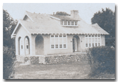 Henderson's Suffern House. |
| February 11, 1920 | The 1920 U.S. Census lists Alexander D. Henderson (55), Ella B. (52), Alexander D. Henderson Jr. (25) and James Wynne (40) their butler living on South Monsey Road in Suffern, N.Y. Source: 1920 Census: Ramapo, Rockland, New York; Roll: T625_1259; Page: 8A; Enumeration District: 232; Image: 241. | |
| February 14, 1920 | Married Mary Barnes Anthony at her parents Ridgewood home in New Jersey. | |
| 1920 | His father, Alexander D. Henderson Sr. built the couple a house in Suffern, New York across the road from their own house. | |
| Maurice Henderson, Mary Ann, Charles, and Angie Hendrickson would come to his father's house in Suffern for Thanksgiving. Source: "Mary's Family Connections," 1979, pg. 90. | ||
| He and his father were driven in his father's car with his chauffeur after an early breakfast, first to the California Perfume Company plant or laboratory in Suffern. Then, they were both driven to the train station to take the train to the CPC New York offices. |
Mary-Ella Henderson |
|
| April 17, 1922 | Mary-Ella Henderson was born at 6:45 A.M. at the Good Samaritan Hospital in Suffern, New York. Source: | |
| June 10, 1922 | The New York & Suffern Express was incorporated for $10,000; W. V. A. Clar, A. D. Henderson Jr., L. Riley. (Attorney, M. Lexow, Suffern) Source: ProQuest Historical Newspapers - New York Times. | |
| March 26, 1924 | Alexander D. Henderson III was born at the Fith Avenue Hospital in New York City, New York at 11:45 A.M. Source: Birth Certificate. | |
| January 25, 1925 | His father, Alexander D. Henderson Sr. died in Suffern, New York after a very short illness. He was mourned by his family and associates. Source: NY Death Certificate #5375 and the Suffern newspaper. |
Alexander D. Henderson III |
| 1925-1951 | By 1925 Mr. Henderson had become Vice-president and a director of CPC. Source: Bagpiper newspaper, August 1964. | |
| 1927 | Mr. Henderson was Vice-President in charge of Purchases. He would buy the ingredients from which everything in the CPC line was made. "As such, he is, of course, a most important factor in the maintaining the high quality and low prices of the products you sell." Source: Introducing You To The CPC booklet. | |
| 1929-1932 | The family moved into a large two-story home in Tallman, New York. They lived in Tallman for four years. They had a chauffeur, cook, and an upstairs maid. His polo pony, Ginger, was kept in the barn. The 5-acre property had an apple orchard. His mother-in-law Anthony had a lovely cottage on the property (behind the orchard). | 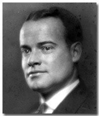 Alexander D. Henderson Jr. |
| April 3, 1930 | The 1930 U.S. Census lists Alexander D. Henderson (35), Nonny (30), Mary Ella (7), Alexander (5) and Laura J Anthony (61 - Mother-in-law), living on Cherry Lane in Ramapo, Rockland, New York. Source: Year: 1930; Census Place: Ramapo, Rockland, New York; Roll: 1641; Page: 1A; Enumeration District: 38; Image: 12.0. | |
| 1930 | When the depression hit in 1930, Mr. McConnell cancelled the dividends on the Common stock of the California Perfume Company, and their income was cut in half. Source: Mary's Family Connections, pg. 97. | |
| 1933 | The family spent winters in Palm Beach, Florida. | |
| 1934 | Mary and Mr. Henderson were separated. | |
| August 2, 1934 | Mr. Henderson (39) and Lucy (23) were passengers on the Southern Cross departing from Hamilton, Bermuda to New York City. Source: New York Passenger Lists, 1820-1957; Microfilm serial: T715; Microfilm roll: T715_5522; Line: 1. | |
| 1935 | Mary and Mr. Henderson were divorced in Las Vegas. | |
| December 17, 1935 | The Alexander Dawson, Inc. was incorporated and the certificate of incorporation was filed with the Secretary of State of Trenton New Jersey. Mrs. Ella B. Henderson transferred securities she held to the company in exchange for shares in company stock. Source: ADI Certificate of Incorporation. | |
| December 18, 1935 | The first meeting between the board members of the Alexander Dawson, Inc. was held at 111 John Street, Manhattan, New York. Three directors were elected: Ella B. Henderson, Alexander D. Henderson, and Girard B. Henderson. Source: ADI Certificate of Incorporation. | |
| 1936 | Alex married Lucia Maria Ernst, whom he met at Avon. | |
| 1939 | The California Perfume Company became Avon Products Inc. in 1939 in tribute to David McConnell's favorite playwright, William Shakespeare and Stratford on Avon. | |
| January 17, 1940 | Mr. Henderson's mother, Mrs. Ella Brown Henderson died suddenly, at her home, Nyack Turnpike, Suffern, New York. Funeral services were held at her home Jan. 19, 1940, at 2 PM. Source: ProQuest Historical Newspapers The New York Times, pg. 23. | |
| March 1, 1940 | A special meeting of the board of directors for Alexander Dawson Inc. was held at room 2707, 111 John Street, Borough of Manhattan, New York City. At this meeting it was announced, “With deep sorrow, the death of Mrs. Ella B. Henderson on January 17, 1940, was recorded.” The board voted that Alexander D. Henderson was elected President of the Corporation and Girard B. Henderson was elected as Vice President and Treasurer. Source: 1940 ADI Board Minutes. | |
| November 1, 1941 | His parents home in Suffern Park caught fire as workmen were engaged in tearing it down. The Suffern and Tallman fire departments saved the partly demolished building from complete destruction. Source: The Rockland County Journal News. |
|
| December 7, 1941 | The attack on Pearl Harbor prompted the US to declare war on Japan. | |
| 1941 | Mr. Henderson, with his wife Lucy, joined his brother, Girard B. Henderson at Lady's Island. Jerry wanted to help the war effort by patroling the Carolina cost for U-boats and growing crops on his 600 acre farm in Beaufort, South Carolina. | |
| 1942 | Alexander Dawson Henderson is listed in the U.S. World War II Draft Regitration Card. His residence is listed as Riversville Road, Fairfield, Connecticut. Lucy Henderson is listed on his draft card.His business address was 400 Madison Av. N.Y., N.Y. Source: Ancestry.com. U.S. World War II Draft Registration Cards, 1942; United States, Selective Service System. Selective Service Registration Cards, World War II: Fourth Registration. National Archives and Records Administration Branch locations: National Archives and Records Administration Region Branches. |
|
| January 14, 1943 | The annual meeting of stockholders for Alexander Dawson Inc. was held at room 2707, 111 John Street, New York City. The minutes note a motion that was made and seconded to elect four directors for one year: A. D. Henderson, G. B. Henderson, Lucy B. Henderson, and Theodora Henderson. In addition the minutes stated the amount of shares each stockholder owned. Source: 1943 ADI Board Minutes. | |
| January 13, 1944 | The annual meeting of stockholders for Alexander Dawson Inc. was held at Colony Gardens, Beaufort, South Carolina. The minutes show that the bylaws were amended to provide that meetings of the stockholders could be held anywhere in continental United States. The Corporation accountant was noted as Mr. Adolph Manson, who prepared the 1943 balance sheet and the Profit and Loss statement. Source: 1944 ADI Board Minutes. | |
| January 9, 1945 | On of the annual meeting of stockholders for Alexander Dawson Inc. was held at Colony Gardens, Beaufort, South Carolina. The minutes state that that the Chairman announced that he and the Secretary had acted during the past year as the Executive Committee of the Board of Directors. That they had declared dividends to be paid on the preferred and common stock and had attended all the Stockholders meetings of Allied Products Inc. and Avon Products Ltd. of Canada and voted the stock held by the Corporation. The Chairman authorized G. B. Henderson to vote all the Stock held by this Corporation at such stockholders meetings. Source: 1945 ADI Board Minutes. | |
| August 15, 1945 | Japan surrendered, ending World War II. | |
| 1945 | Alex left Lady's Island and moved back to New York City. | |
| March 9, 1946 | Douglas Henderson was born in New York City. |  A. Douglas Henderson |
| 1951 | At age 56, Mr. Henderson retired from Avon and moved to Hillsboro Beach, Broward County, Florida. He lived in a white two-story house on 1011 Hillsboro Mile (A1A) with an ocean view. | |
| 1952 |
Mr. Henderson contributed to the Henderson Clinic of Broward County for emotionally disturbed children in Fort Lauderdale, Florida. |
|
| August 10, 1955 | The list of passengers coming from Honolulu, Hawaii to San Francisco on the S.S. Lurline included: Alexander D. (60), Lucy E. (44), and Alexander Douglas Henderson (9). Source: California Passenger and Crew Lists, 1893-1957 | |
| 1956 | Mr. Henderson was the Founder and administrator of the Hillsboro Country Day School in Pompano Beach, Florida. He devoted his vast energies and considerable financial resources to the operation of this school. He acquired the Avon by the Sea apartments across the street from the Hillsboro Country Day School. Source: ProQuest Historical Newspapers, New York times, pg. 7. | 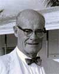 A. D. Henderson Jr. |
| 1958-1964 | Mr. Henderson was elected Mayor of Hillsboro Beach, Florida for six years. | |
| 1959 | The A. D. Henderson Foundation was founded in 1959 by Alexander D. Henderson and his wife, Lucy E. Henderson. The Foundation is dedicated to provide an opportunity for all children to succeed, with a special interest in promoting literacy for children and families. Source: A. D. Henderson Foundation Web site. | 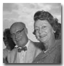 A. D. Henderson and wife Lucy |
| 1960 | Mr. Alexander D. Henderson and his wife Lucy gave the Henderson Mental Clinic stock in Avon Products as well as property. The money from the sale of the stock enabled the clinic to build the structure and purchase the furnishings. The Clinic was renamed Henderson Clinic of Broward County in 1961. Lucy Henderson continued to support the Clinic with grants from the A. D. Henderson foundation. |
|
| 1961 | Alexander and Lucy Henderson made significant contributions needed to start the Saint Andrew's School an Episcopal School for Boys in Boca Raton, Florida. Mr. Henderson was also a Trustee at the St. Andrew's School. Founded by people of Scottish heritage, Saint Andrew's School was named for the patron saint of Scotland, Saint Andrew. |
|
| December 6, 1961 | Mr. Henderson wrote his Will in the state of New York. He appointed his wife, Lucy E. Henderson as the executor of the Will. | 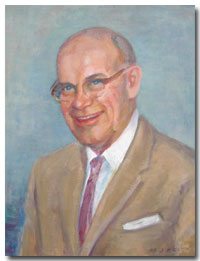 Alexander D. Henderson |
| July 8, 1964 | At age 69, Alexander D. Henderson Jr. died at the Deaconess Massachusetts General Hospital (New England Deaconess Hospital) in Boston, Massachusetts of a blood disease. The Sun Sentinel newspaper of Pompano Beach, Florida and the New York Times covered his death. The Kraeer Funeral Home in Pompano Beach was in charge of funeral arrangements. The service was held at St. Martins-in-the Field Episcopal Church in Pompano Beach at 10 a.m., Monday, July 13th. The family requested that contributions be made to the Debbie-Rand Memorial Service League, Inc. in Boca Raton, Florida. |
|
| July 10, 1964 | New York Times ran an article titled: Alexander D. Henderson, Avon Products Director. It said "Alexander D. Henderson of Hillsboro Beach, Fla., a director and former vice president of Avon Products, inc., cosmetics company, died Wednesday in New England Deaconess Hospital in Boston. He was 69 years old." Source: ProQuest Historical Newspapers, The New York Times pg. 29. | 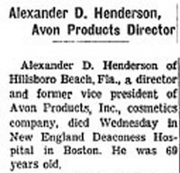 |
| The Hillsboro Town Commission held a reorganizational meeting to appoint a successor as mayor and to name someone to fill out Henderson's unexpired commission term. | ||
| August, 1964 | The Bagpiper of Saint Andrew's School paid tribute to him in their newspaper and in a "Henderson Memorial Resolution," which recognized his as a "good citizen, a man of outstandingly successful in his career, a devoted public servant, a generous benefactor, and most important of all, a staunch and loyal friend." | |
| September 23, 1964 | Avon Products inc., announced it had filed with the Securities and Exchange Commission a proposal for the sale of 720,000 shares of capital stock by the estate of Alexander D. Henderson, director of the cosmetics company. Source: ProQuest Historical Newspapers The New York Times pg. 76. | |
| 1967 | His brother, Girard Henderson, opened the Alexander Dawson School (a.k.a. Colorado Junior Republic) at 4801 N. 107th Street Lafayette. Colorado. | |
| Dec. 1, 1968 | The dedication of the Alexander D Henderson University School and special convocation was held in Boca Raton, Florida. The school was made possible by a gift ($1,350,000) to the State and Florida Atlantic University from his wife, Lucy E. Henderson. Lucy received an honorary degree of Doctor of Humane Letters. Countless generations of school children will benefit from this generosity. |
The Henderson School Logo |
| His wife, Mrs. Lucy Henderson Edmondson, established the Alexander D. Henderson Memorial Scholarship. In addition, Henderson Hall is named for Mr. Henderson, and the Chapel of Saint Andrew the Apostle is a memorial to Mr. Henderson. Source: Saint Andrew’s School 2001-2002 Endowment Fund Contributions. | ||
| April 18, 1969 | The E. B. R. Corporation bought the property of the Hillsboro Country Day School and Avon Apartments. Lucy E. Henderson sold the property for $975,000. Source: ProQuest Historical Newspapers, New York times, pg. 7. | |
| July 1, 1991 | The Alexander D. Henderson University School was legislated school district number 72, developmental research school, effective July 1, 1991. | |
| 2001 | The 2001 School Recognition Report said that the Alexander D. Henderson University School (ADHUS) is a developmental research school located on the campus of Florida Atlantic University (FAU) in Boca Raton, Florida. The school serves students in elementary-middle school (K-8). The student population reflects the demographics of the state population and is pooled from Broward and Palm Beach counties. | |
| December 15, 2004 | A.D. Henderson University School (part of Florida Atlantic University) held a celebration
and hoisted the Blue Ribbon School flag in recognition of its prestigious
achievement of being named one of 239 Blue Ribbon Schools in the United
States. The event was held on Friday, December 17 at 8 a.m. in front
of the A.D. Henderson University School, FAU's Boca Raton campus, 777
Glades Road.
"It was a team effort that enabled us to meet the challenge and enjoy the achievement of being a Blue Ribbon School," said Dr. Marla Lee, principal of the Henderson School. "Raising the bar and reaching new goals, that is what this is about." A.D. Henderson was one of five Florida public schools presented with the National Blue Ribbon School award. Source: FAU, BOCA RATON, FL. |